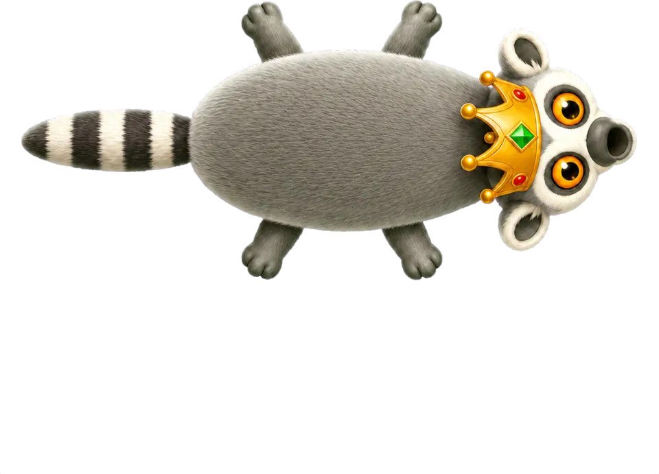

Mnyororo unaofuata njia
Mnyororo wa mipira ya rangi unafuata njia iliyopinda na kufunga mapengo baada ya mechi. Mechi inahitaji mipira mitatu au zaidi.
Mfalme wa lemuri analinda msitu.
Mchezo wa kurusha mipira uliowekwa msituni wenye mwanga. Lenga, unganisha tatu au zaidi, anzisha mmenyuko mnyororo na utumie uwezo maalum kusimamisha mnyororo kabla haujafika mwisho.
Ngazi moja ya majaribio ina mzunguko kamili wa kurusha na kulinganisha. Kampeni, ramani ya ngazi na mabosi kutoka hati ya muundo bado havijajengwa.

Press Rush
Mipira mitatu au zaidi ya rangi moja hufutwa. Pengo likifungwa na ncha mbili kutengeneza mechi mpya, mmenyuko mnyororo hufuata.
Uwezo maalum na vitu vya ubao vinakusaidia kufikia lengo la ngazi kabla mnyororo haujafika mwisho wa njia.
Mnyororo wa mipira ya rangi unafuata njia iliyopinda na kufunga mapengo baada ya mechi. Mechi inahitaji mipira mitatu au zaidi.
Wildcard, bomu, rewind, moto, radi, mizizi, kuganda, maji, lengo, kutoboa kwa jiwe na risasi mbili zimetekelezwa kwenye kanuni za mchezo, kila moja ikiwa na nembo yake.
Mabomu ya uwanjani na fuwele za rangi vinakaa kwenye ubao na kujibu vinapogongwa.
Ngazi inaweza kukuomba ufute mnyororo, uamshe vitu vya ubao, ufikie alama au ufikie maporomoko lengwa.
Lemuri mwenye taji ana mikao ya miitikio wakati wa kucheza.
Skrini ya kusitisha inatoa sauti ya athari, sauti ya muziki na mpangilio wa mwongozo wa kulenga.
Bado hakuna tarehe ya kutolewa. Hizi ni malengo ya mradi, si ahadi.
Vipengee vya sanaa kutoka mradi wa Unity, si picha za uchezaji.




Mchezo wa kurusha mipira mtindo wa Zuma msituni wenye mwanga. Mfalme wa lemuri mwenye taji hurusha mipira ya rangi kwenye mnyororo unaosogea. Unalinganisha tatu au zaidi na kutumia uwezo maalum kuusimamisha.
Bado. Lyamur ni mfano wa awali wenye ngazi moja ya majaribio, bila toleo la umma wala tarehe ya kutolewa. Hati ya muundo inalenga simu na PC.
Lyamur inatengenezwa na WillowinWorlds, studio huru ya michezo (tazama michezo mikuu). Fuata WillowinWorlds kwenye chaneli za kijamii zilizounganishwa kwenye ukurasa huu, au tuma barua pepe willowinworlds@gmail.com kuuliza kuhusu masasisho ya Lyamur.
Kupiga kura kutafunguliwa kwenye chaneli za studio. Fuata WillowinWorlds ili ushiriki.